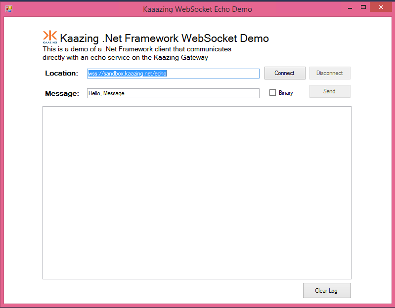

Interact with Kaazing Gateway Using the WebSocket API
This procedure describes how you can use the WebSocket API—provided by the Kaazing .NET client library—from a .NET application. This API allows you to take advantage of the WebSocket standard as described in the HTML5 specification. For example, you can create a .NET application that uses the Kaazing .NET client library to interact directly with a back-end server. The support for WebSocket is provided by the WebSocket class and its supporting classes.
The Kaazing Microsoft .NET WebSocket API supports the following deployment scenarios:
.NET 4.0 Frameworks
.NET 4.5 (4.5.1) Frameworks, including Windows Surface RT
Windows 8 (8.1) desktop and Surface Pro applications
Navigate to the WebSocket app for Windows Desktop at dotnet.client.tutorials\ws\WindowsDesktop.
Double-click EchoDemo.sln. The solution opens in Visual Studio.
In Solution Explorer, right-click EchoDemo and click Build.
To run the app, click the Start arrow. The desktop app appears in a new window.

Figure: Windows Desktop Tutorial App
In the app, click Connect to connect to the publicly available Kaazing WebSocket Gateway and Echo service at URL wss://sandbox.kaazing.net/echo.
Click Send to send and receive a message from the Kaazing WebSocket Gateway.
Supported Data Types
You can send a WebSocket message using one of the following data types:
String — A text WebSocket message (UTF-8).
Binary (using the ByteBuffer class) — A compact byte array representation for sending, receiving and processing binary data using WebSocket.
Primary WebSocket Microsoft .NET API Features
The examples in this section will demonstrate how to open and close a WebSocket connection, send and receive messages, and error handling.
Connecting and Closing Connections
The following example demonstrates how to open and close a connection. The code includes authentication, and calls functions to update the client UI with messages describing the connection state.
To demonstrate the Kaazing WebSocket .NET SDK, let's create a simple .NET desktop application that uses the Kaazing WebSocket Gateway and its Echo service to send and receives Echo messages over WebSocket. This is the same .NET Echo desktop application that is available on Github as part of the Kaazing .NET tutorials here https://github.com/kaazing/dotnet.client.tutorials.
Install a .NET Integrated Development Environment (IDE). This procedure assumes that you are using Microsoft Visual Studio or the free Visual Studio Community.
Note: You can develop .NET Framework applications in any of the .NET programming languages. Microsoft Visual C# is used in the code examples in this document.
Download the Kaazing Microsoft .NET SDK NuGet package file (.nupkg) from kaazing.com/download.
Open Visual Studio.
Create a new project. Click File, click New, and then click Project.
Click the Installed navigation heading, expand Templates, expand Visual C#, and click Windows Desktop.
Click Windows Forms Application.
At the top of the dialog, select .NET Framework 4.5.2.
In Name, enter EchoDemo and click OK. Visual Studio created the new EchoDemo project.
Install the Kaazing Microsoft .NET SDK.
Click TOOLS, click NuGet Package Manager, and then click Package Manager Settings.
In the navigation, click Package Sources.
Click the plus icon to add a new source.
In Name, enter Kaazing.
In Source, click the browse button, ....
Locate the folder containing the .nupkg file for the Kaazing Microsoft .NET SDK and click Select.
Click OK.
Right-click the EchoDemo project, and click Manage NuGet Packages.
Click Online, click Kaazing, and then click Install.
Click Close.
In your project, expand the References element to see the Kaazing .NET SDK libraries.
Next, let's create the UI for the application. In EchoDemo, rename the Form1.cs form to MainForm.cs and let Visual Studio rename all related references.
In the MainForm.cs code window, replace the default import statements with the following:
using Kaazing.HTML5;
using Kaazing.Security;
using System;
using System.Collections.Generic;
using System.ComponentModel;
using System.Data;
using System.Drawing;
using System.Linq;
using System.Text;
using System.Threading;
using System.Threading.Tasks;
using System.Windows.Forms;
In the MainForm class, add the WebSocket factory object:
namespace EchoDemo
{
public partial class MainForm : Form
{
private WebSocket webSocket = null;
private WebSocketFactory factory = new WebSocketFactory();
public delegate void InvokeDelegate();
/// The code for the subsequent steps goes here.
}
}
Next, add the MainForm() function just below the /// The code for the subsequent steps goes here comment. It will set up the form, and set the default URL for the application to connect to. We will use the publicly available Kaazing WebSocket Gateway at wss://sandbox.kaazing.net/echo:
Create a function to respond when the user clicks the Connect and Disconnect buttons. The method will respond to the Connect button by creating a WebSocket connection using the WebSocket factory, call methods to update the UI (we will add these later), call the MessageEventHandler() to handle the messages that will be received on the connection, and connect to the URL specified earlier:
Create a function to respond when the user clicks the Send button. The SendButton_Click() function determines if the Binary checkbox is selected and uses the ByteBuffer() object to handle binary data. The function then updates the console with the message and sends the message over WebSocket.
Add the event handler that is called when the application connects to the Gateway. The function prevents crossthreading via Invoke and then enables the Send Disconnect buttons now that the connection is made.
Add the MessageHandler() function to manage received messages. As you can see, messages fall into one of three event types: binary, text, and a control message. A switch statement is used to evaluate the messages, encode them as needed, and log the messages to the console.
From the Build menu, click Build. The Visual Studio output console records the successful build.
Click Start. The WebSocket .NET desktop application displays.
Ensure that the Location field contains wss://sandbox.kaazing.net/echo. Click Connect. The log console displays CONNECTED.
Click Send. The text message is sent and the Echo service on the Gateway returns the message.
Notes
The Microsoft .NET 4.0 Frameworks has a maximum connection limit of two per domain, similar to the browser limitation. For any Microsoft .NET application that uses more than one WebSocket connection at a time, you must either ensure that any WebSocket connection is closed by using WebSocket.Close() before opening another WebSocket connection, or increase the connection limit on the application by updating the maxconnection attribute in the app.config file. For more information, see (KG-1851) Two Connection Limit in Kaazing Clients for Microsoft .NET in Release Notes.